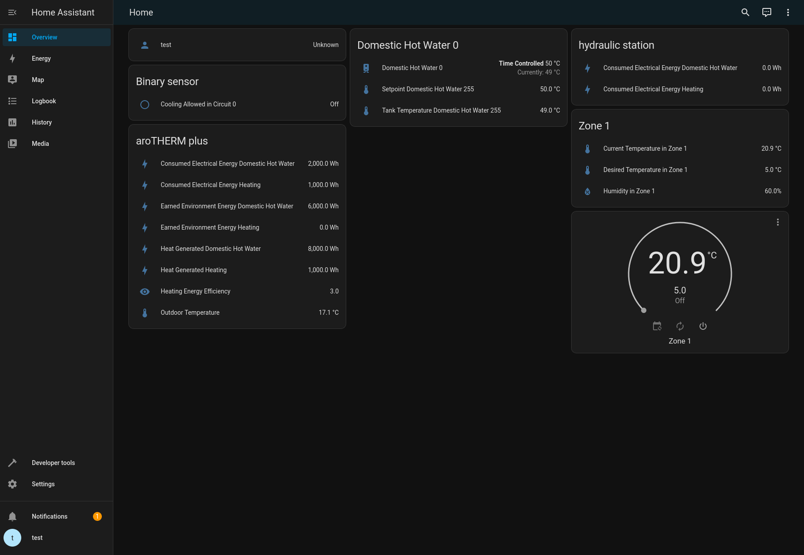

Contributing
Cloning & Installing
Warning
You need at least Python 3.10.
Fork and clone the mypyllant-component repository, then from
within the directory run:
python3 -m venv .venv
source .venv/bin/activate
pip install -r dev-requirements.txt
pre-commit install
# Make your changes
git commit -m ... # Code formatting, analysis, and tests are run automatically before the commit
If you also need to modify the underlying myPyllant library,
clone & install it in editable mode in mypyllant-component:
# From within the mypyllant-component directory
git clone https://github.com/signalkraft/myPyllant.git ../myPyllant
pip install -e ../myPyllant
Now you can modify myPyllant/src and directly develop against these changes in mypyllant-component.
VSCode Dev Container
There's also a VSCode dev container available in .devcontainer.json, provided
by github.com/ml1nk.
Debugging
When debugging or reporting issues, turn on debug logging by adding this to your configuration.yaml
and restarting Home Assistant:
logger:
default: warning
logs:
custom_components.mypyllant: debug
myPyllant: debug
Then you can check for errors in System > Logs
and attach the logs
when creating an issue.
Testing in Docker
To test your changes, you can spin up a quick Docker environment:
- Follow the cloning & installation steps above
- Copy
.env.sample to .env and add your credentials in the new file
- Run
docker compose up
After HA started, open http://localhost:8123 in your browser and sign in with user test and
password test.
The integration should be configured and show entities on the default dashboard.

Contributing to the underlying myPyllant library
Warning
You need at least Python 3.10
Fork and clone the myPyllant repository, then from within the directory run:
python3 -m venv .venv
source .venv/bin/activate
pip install -r dev-requirements.txt
pip install -e .
pre-commit install
# Make your changes
git commit -m ... # Code formatting, analysis, and tests are run automatically before the commit
Supporting new Countries
The myVAILLANT app uses Keycloak and OIDC for authentication, with a realm for each country and brand.
There is a script to check which countries are supported:
python3 -m myPyllant.tests.find_countries
Copy the resulting dictionary
into https://github.com/signalkraft/myPyllant/blob/main/src/myPyllant/const.py
Source code in myPyllant/tests/find_countries.py
| def main():
print("COUNTRIES = {")
for brand in BRANDS.keys():
if brand == "bulex":
# Bulex has no country-specific realms
continue
print(f' "{brand}": {{')
for country_name, country in countries_with_realm(brand):
print(f' "{country_name}": "{country}",')
print(" },")
print("}")
|
options:
show_source: true
heading_level: 0
Contributing Test Data
Because the myVAILLANT API isn't documented, you can help the development of this library by contributing test data:
You can then either create a PR with the created folder, or zip it
and attach it to an issue.
Generate json data for running testcases.
Parameters:
| Name |
Type |
Description |
Default |
user |
str
|
|
required
|
password |
str
|
|
required
|
brand |
str
|
Brand, such as vaillant or bulex
|
required
|
country |
str
|
|
None
|
write_results |
bool
|
Whether to write results to disk, or return them
|
True
|
Source code in myPyllant/tests/generate_test_data.py
| async def main(user, password, brand, country=None, write_results=True):
"""
Generate json data for running testcases.
Parameters:
user (str): myVAILLANT app username
password (str): myVAILLANT app password
brand (str): Brand, such as vaillant or bulex
country (str): myVAILLANT app country
write_results (bool): Whether to write results to disk, or return them
"""
from myPyllant.api import MyPyllantAPI
from myPyllant.enums import DeviceDataBucketResolution
from myPyllant.utils import datetime_format
results: dict[str, Any] = {}
json_dir = user_json_dir(user)
if write_results:
json_dir.mkdir(parents=True, exist_ok=True)
def create_result(result, name, directory=None):
if write_results:
if directory:
write_dir = json_dir / directory
else:
write_dir = json_dir
with open(write_dir / f"{name}.json", "w") as fh_json:
fh_json.write(json.dumps(result, indent=2))
if directory:
if directory not in results:
results[directory] = {}
results[directory][name] = result
else:
results[name] = result
async with MyPyllantAPI(user, password, brand, country) as api:
homes_url = f"{get_api_base()}/homes"
async with api.aiohttp_session.get(
homes_url, headers=api.get_authorized_headers()
) as homes_resp:
homes = await homes_resp.json()
anonymized_homes = _recursive_data_anonymize(copy.deepcopy(homes), SALT)
for home in anonymized_homes:
if "address" in home:
home.pop("address")
create_result(
anonymized_homes,
name="homes",
)
if not homes:
# No homes means no systems to generate test data for
print("No homes found.")
if write_results:
print(f"Wrote homes.json to {json_dir}")
exit(0)
else:
return results
for home in homes:
anonymized_home = _recursive_data_anonymize(copy.deepcopy(home), SALT)
anonymized_system_id = anonymized_home["systemId"]
real_system_id = home["systemId"]
print(f"Generating test data for {anonymized_system_id}...")
if write_results:
(json_dir / anonymized_system_id).mkdir(parents=True, exist_ok=True)
control_identifier_url = f"{get_api_base()}/systems/{real_system_id}/meta-info/control-identifier"
try:
async with api.aiohttp_session.get(
control_identifier_url, headers=api.get_authorized_headers()
) as ci_response:
control_identifier_json = await ci_response.json()
control_identifier = control_identifier_json["controlIdentifier"]
create_result(
control_identifier_json,
"control_identifier",
anonymized_system_id,
)
except Exception as e:
logger.error(
f"Error fetching {control_identifier_url}: {e}", exc_info=e
)
control_identifier = DEFAULT_CONTROL_IDENTIFIER
tz_url = f"{get_api_base()}/systems/{real_system_id}/meta-info/time-zone"
try:
async with api.aiohttp_session.get(
tz_url, headers=api.get_authorized_headers()
) as tz_response:
create_result(
await tz_response.json(),
"time_zone",
anonymized_system_id,
)
except Exception as e:
logger.error(f"Error fetching {tz_url}: {e}", exc_info=e)
dtc_url = (
f"{get_api_base()}/systems/{real_system_id}/diagnostic-trouble-codes"
)
try:
async with api.aiohttp_session.get(
dtc_url, headers=api.get_authorized_headers()
) as dtc_response:
dtc = await dtc_response.json()
anonymized_dtc = _recursive_data_anonymize(copy.deepcopy(dtc), SALT)
create_result(
anonymized_dtc,
"diagnostic_trouble_codes",
anonymized_system_id,
)
except Exception as e:
logger.error(f"Error fetching {dtc_url}: {e}", exc_info=e)
try:
connection_status_url = f"{get_api_base()}/systems/{real_system_id}/meta-info/connection-status"
async with api.aiohttp_session.get(
connection_status_url, headers=api.get_authorized_headers()
) as status_resp:
create_result(
await status_resp.json(),
"connection_status",
anonymized_system_id,
)
except Exception as e:
logger.error(f"Error fetching {connection_status_url}: {e}", exc_info=e)
system_url = get_system_api_base(real_system_id, control_identifier)
try:
async with api.aiohttp_session.get(
system_url, headers=api.get_authorized_headers()
) as system_resp:
system = await system_resp.json()
anonymized_homes = _recursive_data_anonymize(
copy.deepcopy(system), SALT
)
create_result(
anonymized_homes,
"system",
anonymized_system_id,
)
except Exception as e:
logger.error(f"Error fetching {system_url}: {e}", exc_info=e)
current_system_url = (
f"{get_api_base()}/emf/v2/{real_system_id}/currentSystem"
)
try:
async with api.aiohttp_session.get(
current_system_url, headers=api.get_authorized_headers()
) as current_system_resp:
current_system = await current_system_resp.json()
anonymized_current_system = _recursive_data_anonymize(
copy.deepcopy(current_system), SALT
)
create_result(
anonymized_current_system,
"current_system",
anonymized_system_id,
)
except Exception as e:
logger.error(f"Error fetching {current_system_url}: {e}", exc_info=e)
mpc_url = f"{get_api_base()}/hem/{real_system_id}/mpc"
try:
async with api.aiohttp_session.get(
mpc_url, headers=api.get_authorized_headers()
) as mpc_resp:
mpc = await mpc_resp.json()
anonymized_mpc = _recursive_data_anonymize(copy.deepcopy(mpc), SALT)
create_result(
anonymized_mpc,
"mpc",
anonymized_system_id,
)
except Exception as e:
logger.error(f"Error fetching {mpc_url}: {e}", exc_info=e)
rts_url = f"{get_api_base()}/rts/{real_system_id}/devices"
try:
async with api.aiohttp_session.get(
rts_url, headers=api.get_authorized_headers()
) as rts_resp:
rts = await rts_resp.json()
anonymized_rts = _recursive_data_anonymize(copy.deepcopy(rts), SALT)
create_result(
anonymized_rts,
"rts",
anonymized_system_id,
)
except Exception as e:
logger.error(f"Error fetching {rts_url}: {e}", exc_info=e)
device = current_system["primary_heat_generator"]
start = datetime.now().replace(
microsecond=0, second=0, minute=0, hour=0
) - timedelta(days=1)
end = datetime.now().replace(microsecond=0, second=0, minute=0, hour=0)
if device and "data" in device:
querystring = {
"resolution": DeviceDataBucketResolution.HOUR,
"operationMode": device["data"][0]["operation_mode"],
"energyType": device["data"][0]["value_type"],
"startDate": datetime_format(start),
"endDate": datetime_format(end),
}
device_buckets_url = (
f"{get_api_base()}/emf/v2/{real_system_id}/"
f"devices/{device['device_uuid']}/buckets?{urlencode(querystring)}"
)
try:
async with api.aiohttp_session.get(
device_buckets_url, headers=api.get_authorized_headers()
) as device_buckets_resp:
device_buckets = await device_buckets_resp.json()
create_result(
device_buckets,
"device_buckets",
anonymized_system_id,
)
except Exception as e:
logger.error(
f"Error fetching {device_buckets_url}: {e}", exc_info=e
)
if write_results:
print(f"Wrote test data to {json_dir}")
print()
print(
"Results are already anonymized, but the myVAILLANT API may change and contain new, sensitive data."
)
print("You should check the contents of the JSON files before sharing them.")
else:
return results
|
options:
show_source: true
heading_level: 0
Adding new API endpoints
If your myVAILLANT app has more features than this integration, chances are you have a more complex system then me.
You can reverse engineer the API endpoints and open an issue with the requests + responses.
See Reverse Engineering for a tutorial.
Running commands on your Home Assistant installation in Docker
If you're using this component in a Home Assistant installation that uses docker compose, you can run these commands
directly (from the folder that contains your docker-compose.yml):
docker compose exec homeassistant python3 -m myPyllant.tests.generate_test_data username password brand --country country
# Note the output folder
docker compose cp homeassistant:<testdata folder> .
# Test data will be copied to your current directory